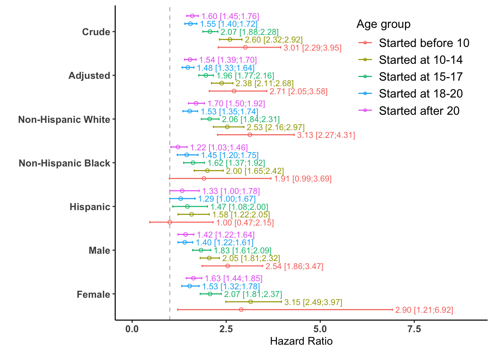

11 Effect Modification Analysis
This section explains the effect modification analysis, which investigates whether the association between early smoking initiation and all-cause mortality is changed by key demographic variables like race/ethnicity and sex. Effect modification occurs when the strength or direction of an association differs across levels of another variable.
This is investigated through 2 ways.
- Interaction Terms : Including interaction terms in our survey-weighted Cox proportional hazards models and performing statistical tests for these interaction terms.
- RERI (Relative Excess Risk due to Interaction) : Calculating this measure to assess additive interaction, which provides a different perspective on how factors combine their effects.
The key methods are summarized below:
| Analysis | Key R Function(s) | Purpose | Reproduces |
|---|---|---|---|
| Effect Modification by Race/Ethnicity | svycoxph() |
Estimate stratum-specific HRs for each racial/ethnic group. | Figure 2 (Race-specific HRs) |
| Effect Modification by Sex | svycoxph() |
Estimate stratum-specific HRs for males and females. | Figure 2 (Sex-specific HRs) |
| Interaction Tests |
svyglm(), regTermTest()
|
Formally test if the effect of smoking initiation differs across groups. | Paper’s p-values for interaction |
| Forest Plot | ggplot() |
Visualize and compare all crude, adjusted, and stratum-specific HRs. | Figure 2 (Complete Plot) |
| Additive Interaction (RERI) |
reri.f() (custom) |
Quantify the excess risk due to the combined presence of two factors. | Appendix Tables 4 & 5 |
- R Code Chunk 1: Load Data and Processed Results
The following code loads the essential w.design0 survey design object, which was created and saved in the previous section. This object is important for all subsequent survey-weighted analyses coming up. Additionally, it ensures that f0r and f1r (the processed Hazard Ratios from previous section) are available for binding and plotting.
11.1 Investigating Effect Modification by Race/Ethnicity
- R Code Chunk 2: Effect Modification by Race/Ethnicity
The following code fits a survey-weighted Cox proportional hazards model, including an interaction term between exposure.cat (smoking initiation age) and race. This model is used to assess if the association between early smoking initiation and mortality differs across various racial/ethnic levels or groups.
Show/Hide Code
# Effect modification by race
fit2 <- svycoxph(Surv(stime.since.birth, status_all) ~ exposure.cat*race
+ sex + year.cat, design = w.design0)
# Publish the results for later processing
f2 <- publish(fit2)
#> Stratified 1 - level Cluster Sampling design (with replacement)
#> With (301) clusters.
#> subset(w.design, miss == 0 & survey.weight.new > 0)
#> Variable Units HazardRatio CI.95 p-value
#> sex Male Ref
#> Female 0.74 [0.70;0.79] < 0.001
#> year.cat 1999-2000 Ref
#> 2001-2002 0.96 [0.86;1.08] 0.52079
#> 2003-2004 0.84 [0.74;0.94] 0.00236
#> 2005-2006 0.75 [0.67;0.84] < 0.001
#> 2007-2008 0.77 [0.66;0.90] < 0.001
#> 2009-2010 0.68 [0.59;0.78] < 0.001
#> 2011-2012 0.62 [0.51;0.76] < 0.001
#> 2013-2014 0.58 [0.48;0.69] < 0.001
#> 2015-2016 0.34 [0.26;0.45] < 0.001
#> 2017-2018 0.19 [0.13;0.29] < 0.001
#> exposure.cat(Never smoked): race(Black vs White) 1.82 [1.63;2.04] < 0.001
#> exposure.cat(Never smoked): race(Hispanic vs White) 1.24 [1.06;1.45] 0.00596
#> exposure.cat(Never smoked): race(Others vs White) 1.21 [0.95;1.54] 0.12522
#> exposure.cat(Started before 10): race(Black vs White) 1.11 [0.54;2.29] 0.77275
#> exposure.cat(Started before 10): race(Hispanic vs White) 0.40 [0.17;0.90] 0.02774
#> exposure.cat(Started before 10): race(Others vs White) 1.74 [0.65;4.69] 0.27143
#> exposure.cat(Started at 10-14): race(Black vs White) 1.44 [1.13;1.83] 0.00303
#> exposure.cat(Started at 10-14): race(Hispanic vs White) 0.78 [0.55;1.10] 0.14920
#> exposure.cat(Started at 10-14): race(Others vs White) 1.44 [0.88;2.35] 0.14422
#> exposure.cat(Started at 15-17): race(Black vs White) 1.43 [1.23;1.67] < 0.001
#> exposure.cat(Started at 15-17): race(Hispanic vs White) 0.89 [0.69;1.15] 0.35784
#> exposure.cat(Started at 15-17): race(Others vs White) 1.57 [1.07;2.30] 0.02207
#> exposure.cat(Started at 18-20): race(Black vs White) 1.72 [1.40;2.10] < 0.001
#> exposure.cat(Started at 18-20): race(Hispanic vs White) 1.05 [0.83;1.32] 0.70369
#> exposure.cat(Started at 18-20): race(Others vs White) 0.96 [0.62;1.50] 0.86329
#> exposure.cat(Started after 20): race(Black vs White) 1.32 [1.07;1.61] 0.00811
#> exposure.cat(Started after 20): race(Hispanic vs White) 0.98 [0.77;1.24] 0.85155
#> exposure.cat(Started after 20): race(Others vs White) 0.77 [0.54;1.10] 0.14624
#> race(White): exposure.cat(Started before 10 vs Never smoked) 3.13 [2.27;4.31] < 0.001
#> race(White): exposure.cat(Started at 10-14 vs Never smoked) 2.53 [2.16;2.97] < 0.001
#> race(White): exposure.cat(Started at 15-17 vs Never smoked) 2.06 [1.84;2.31] < 0.001
#> race(White): exposure.cat(Started at 18-20 vs Never smoked) 1.53 [1.35;1.74] < 0.001
#> race(White): exposure.cat(Started after 20 vs Never smoked) 1.70 [1.50;1.92] < 0.001
#> race(Black): exposure.cat(Started before 10 vs Never smoked) 1.91 [0.99;3.69] 0.05438
#> race(Black): exposure.cat(Started at 10-14 vs Never smoked) 2.00 [1.65;2.42] < 0.001
#> race(Black): exposure.cat(Started at 15-17 vs Never smoked) 1.62 [1.37;1.92] < 0.001
#> race(Black): exposure.cat(Started at 18-20 vs Never smoked) 1.45 [1.20;1.75] < 0.001
#> race(Black): exposure.cat(Started after 20 vs Never smoked) 1.22 [1.03;1.46] 0.02524
#> race(Hispanic): exposure.cat(Started before 10 vs Never smoked) 1.00 [0.47;2.15] 0.99907
#> race(Hispanic): exposure.cat(Started at 10-14 vs Never smoked) 1.58 [1.22;2.05] < 0.001
#> race(Hispanic): exposure.cat(Started at 15-17 vs Never smoked) 1.47 [1.08;2.00] 0.01433
#> race(Hispanic): exposure.cat(Started at 18-20 vs Never smoked) 1.29 [1.00;1.67] 0.04860
#> race(Hispanic): exposure.cat(Started after 20 vs Never smoked) 1.33 [1.00;1.78] 0.04861
#> race(Others): exposure.cat(Started before 10 vs Never smoked) 4.51 [1.87;10.87] < 0.001
#> race(Others): exposure.cat(Started at 10-14 vs Never smoked) 3.01 [1.81;5.02] < 0.001
#> race(Others): exposure.cat(Started at 15-17 vs Never smoked) 2.67 [1.73;4.10] < 0.001
#> race(Others): exposure.cat(Started at 18-20 vs Never smoked) 1.22 [0.74;2.00] 0.43325
#> race(Others): exposure.cat(Started after 20 vs Never smoked) 1.08 [0.70;1.66] 0.73892- R Code Chunk 3: Testing Race/Ethnicity Interaction (Poisson Approximation)
The following code performs statistical tests to formally assess the significance of the interaction term between exposure.cat and race. It uses svyglm with a Poisson family (as an approximation to the Cox model) to allow for anova() comparisons, and regTermTest() is used to perform a Likelihood Ratio Test (LRT) directly on the interaction term. This helps determine if the observed variations in association by race are statistically significant.
Show/Hide Code
# Fit the baseline Poisson model (no interaction)
fit1a <- svyglm(status_all ~ offset(log(stime.since.birth)) +
exposure.cat + race + sex + year.cat,
design = w.design0, family=poisson)
# Fit the full Poisson model (with interaction)
fit2a <- svyglm(status_all ~ offset(log(stime.since.birth)) +
exposure.cat*race + sex + year.cat,
design = w.design0, family=poisson)
# Compare the two models using a Rao-Scott test (via anova)
anova(fit2a,fit1a)
#> Working (Rao-Scott+F) LRT for exposure.cat:race
#> in svyglm(formula = status_all ~ offset(log(stime.since.birth)) +
#> exposure.cat * race + sex + year.cat, design = w.design0,
#> family = poisson)
#> Working 2logLR = 21.45753 p= 0.16075
#> (scale factors: 2 1.9 1.8 1.5 1.4 0.98 0.93 0.76 0.73 0.62 0.57 0.54 0.45 0.37 0.36 ); denominator df= 120
# Directly test the interaction term using a Likelihood Ratio Test
regTermTest(fit2a, test.terms = "exposure.cat:race", method = "LRT")
#> Working (Rao-Scott+F) LRT for exposure.cat:race
#> in svyglm(formula = status_all ~ offset(log(stime.since.birth)) +
#> exposure.cat * race + sex + year.cat, design = w.design0,
#> family = poisson)
#> Working 2logLR = 21.45753 p= 0.16075
#> (scale factors: 2 1.9 1.8 1.5 1.4 0.98 0.93 0.76 0.73 0.62 0.57 0.54 0.45 0.37 0.36 ); denominator df= 120- R Code Chunk 4: Process Race-Specific Hazard Ratios for Plotting
Although the overall interaction term was not statistically significant, the original paper still presented the stratum-specific Hazard Ratios (HRs) to visualize the trends within each racial/ethnic group. So the following code extracts stratum-specific Hazard Ratios (HRs) and their 95% Confidence Intervals (CIs) for each racial/ethnic group from the f2 object (the published output of fit2). These HRs reflect the effect of smoking initiation within each racial/ethnic stratum, allowing for a detailed examination of potential effect modification. The extracted data is formatted into a dataframe, f2r.
Show/Hide Code
# Extract HRs and CIs for each race subgroup from the published output
f2rW <- f2$regressionTable[31:35,c("HazardRatio","CI.95")]
f2rB <- f2$regressionTable[36:40,c("HazardRatio","CI.95")]
f2rH <- f2$regressionTable[41:45,c("HazardRatio","CI.95")]
# Assign group labels and combine into a single data frame
f2rW$group <- "White"
f2rB$group <- "Black"
f2rH$group <- "Hispanic"
f2r <- rbind(f2rW, f2rB, f2rH)
# Process CIs: Extract lower and upper bounds from the CI string
ci <- str_extract_all(f2r[,2], '\\d+([.,]\\d+)?', simplify = TRUE)
f2r$CI.l <- as.numeric(as.character(ci[,1]))
f2r$CI.u <- as.numeric(as.character(ci[,2]))
names(f2r) <- c("mean","CI.95","group","lower","upper")
# Display the final processed data frame
f2r11.2 Investigating Effect Modification by Sex
- R Code Chunk 5: Effect Modification by Sex
The following code fits another survey-weighted Cox proportional hazards model, this time including an interaction term between exposure.cat and sex. This model is used to investigate whether the association between early smoking initiation and mortality varies between male and female participants.
Show/Hide Code
# Effect modification by sex
fit3 <- svycoxph(Surv(stime.since.birth, status_all) ~ exposure.cat*sex
+ race + year.cat, design = w.design0)
# Publish the results for later processing
f3 <- publish(fit3)
#> Stratified 1 - level Cluster Sampling design (with replacement)
#> With (301) clusters.
#> subset(w.design, miss == 0 & survey.weight.new > 0)
#> Variable Units HazardRatio CI.95 p-value
#> race White Ref
#> Black 1.60 [1.47;1.74] < 0.001
#> Hispanic 1.04 [0.93;1.16] 0.51363
#> Others 1.16 [0.98;1.37] 0.09252
#> year.cat 1999-2000 Ref
#> 2001-2002 0.96 [0.86;1.08] 0.51741
#> 2003-2004 0.84 [0.74;0.94] 0.00291
#> 2005-2006 0.75 [0.67;0.84] < 0.001
#> 2007-2008 0.77 [0.66;0.90] < 0.001
#> 2009-2010 0.68 [0.59;0.78] < 0.001
#> 2011-2012 0.62 [0.51;0.76] < 0.001
#> 2013-2014 0.58 [0.48;0.69] < 0.001
#> 2015-2016 0.35 [0.27;0.45] < 0.001
#> 2017-2018 0.20 [0.13;0.29] < 0.001
#> exposure.cat(Never smoked): sex(Female vs Male) 0.67 [0.61;0.74] < 0.001
#> exposure.cat(Started before 10): sex(Female vs Male) 0.77 [0.30;1.99] 0.58537
#> exposure.cat(Started at 10-14): sex(Female vs Male) 1.03 [0.81;1.31] 0.80520
#> exposure.cat(Started at 15-17): sex(Female vs Male) 0.76 [0.66;0.88] < 0.001
#> exposure.cat(Started at 18-20): sex(Female vs Male) 0.73 [0.62;0.87] < 0.001
#> exposure.cat(Started after 20): sex(Female vs Male) 0.78 [0.67;0.90] < 0.001
#> sex(Male): exposure.cat(Started before 10 vs Never smoked) 2.54 [1.86;3.47] < 0.001
#> sex(Male): exposure.cat(Started at 10-14 vs Never smoked) 2.05 [1.81;2.32] < 0.001
#> sex(Male): exposure.cat(Started at 15-17 vs Never smoked) 1.83 [1.61;2.09] < 0.001
#> sex(Male): exposure.cat(Started at 18-20 vs Never smoked) 1.40 [1.22;1.61] < 0.001
#> sex(Male): exposure.cat(Started after 20 vs Never smoked) 1.42 [1.22;1.64] < 0.001
#> sex(Female): exposure.cat(Started before 10 vs Never smoked) 2.90 [1.21;6.92] 0.01677
#> sex(Female): exposure.cat(Started at 10-14 vs Never smoked) 3.15 [2.49;3.97] < 0.001
#> sex(Female): exposure.cat(Started at 15-17 vs Never smoked) 2.07 [1.81;2.37] < 0.001
#> sex(Female): exposure.cat(Started at 18-20 vs Never smoked) 1.53 [1.32;1.78] < 0.001
#> sex(Female): exposure.cat(Started after 20 vs Never smoked) 1.63 [1.44;1.85] < 0.001- R Code Chunk 6: Testing Sex Interaction (Poisson Approximation and AIC)
Similar to the race interaction, we now formally test the significance of the interaction between smoking initiation and sex. We use the same Poisson approximation approach to compare the model with the interaction term (fit3a) against the baseline model without it (fit1a).
The Akaike Information Criterion (AIC) is calculated for this model and compared with previous models to evaluate overall model fit, as discussed in the paper. A lower AIC value indicates a better model fit. The paper reports that the sex interaction was statistically significant (p=0.001) and that this model provided a superior fit (lower AIC) compared to the others.
Show/Hide Code
# Fit the full Poisson model (with sex interaction)
fit3a <- svyglm(status_all ~ offset(log(stime.since.birth)) +
exposure.cat*sex + race + year.cat,
design = w.design0, family=poisson)
# Compare the sex-interaction model to the baseline model (fit1a)
anova(fit3a,fit1a)
#> Working (Rao-Scott+F) LRT for exposure.cat:sex
#> in svyglm(formula = status_all ~ offset(log(stime.since.birth)) +
#> exposure.cat * sex + race + year.cat, design = w.design0,
#> family = poisson)
#> Working 2logLR = 21.44332 p= 0.0014171
#> (scale factors: 1.2 1.1 1 0.87 0.76 ); denominator df= 130
# Directly test the interaction term
regTermTest(fit3a, test.terms = "exposure.cat:sex", method = "LRT")
#> Working (Rao-Scott+F) LRT for exposure.cat:sex
#> in svyglm(formula = status_all ~ offset(log(stime.since.birth)) +
#> exposure.cat * sex + race + year.cat, design = w.design0,
#> family = poisson)
#> Working 2logLR = 21.44332 p= 0.0014171
#> (scale factors: 1.2 1.1 1 0.87 0.76 ); denominator df= 130
# Compare AIC values across all three models for overall fit
AIC(fit1a, fit2a, fit3a)
#> eff.p AIC deltabar
#> [1,] 24.73244 17872.62 1.374024
#> [2,] 34.63283 17878.17 1.049480
#> [3,] 30.80173 17858.35 1.339206- R Code Chunk 7: Process Sex-Specific Hazard Ratios for Plotting
The following code extracts the Hazard Ratios (HRs) and their 95% Confidence Intervals (CIs) for both male and female subgroups from the f3 object (the published output of fit3). These HRs reflect the effect of smoking initiation within each sex level The extracted data is formatted into data frame, f3r.
Show/Hide Code
# Extract HRs and CIs for male and female subgroups from the published output
f3rM <- f3$regressionTable[21:25,c("HazardRatio","CI.95")]
f3rF <- f3$regressionTable[26:30,c("HazardRatio","CI.95")]
# Assign group labels and combine into a single data frame
f3rM$group <- "Male"
f3rF$group <- "Female"
f3r <- rbind(f3rM, f3rF)
# Process CIs: Extract lower and upper bounds from the CI string
ci <- str_extract_all(f3r[,2], '\\d+([.,]\\d+)?', simplify = TRUE)
f3r$CI.l <- as.numeric(as.character(ci[,1]))
f3r$CI.u <- as.numeric(as.character(ci[,2]))
names(f3r) <- c("mean","CI.95","group","lower","upper")
# Display the final processed data frame
f3r11.3 Visualizing the Results (Figure 2)
- R Code Chunk 8: Forest Plot Visualization of Hazard Ratios
The following code prepares the data for the comprehensive forest plot. It binds together the Hazard Ratios from the crude (f0r), adjusted (f1r), race-specific (f2r), and sex-specific (f3r) models into a single data frame fr. It then converts relevant columns to numeric types and assigns descriptive labels (age.grp).
Show/Hide Code
# Bind all processed HR data frames and set as data frame
fr <- rbind(f0r,f1r,f2r,f3r)
fr <- as.data.frame(fr)
# Convert to numeric columns
fr[,c(1,4,5)] <- sapply(fr[,c(1,4,5)], as.numeric)
# Assign 'age.grp' labels
fr$age.grp <- c('Started before 10', 'Started at 10-14',
"Started at 15-17", "Started at 18-20",
"Started after 20")
# Save the final plotting dataframe
saveRDS(fr, file = "data/fr.rds")The following code uses the ggplot2 package to visualize the comprehensive forest plot with the estimated Hazard Ratios and their 95% Confidence Intervals from all models (crude, adjusted, and subgroup-specific). This corresponds to Figure 2 in the published paper.
Show/Hide Code
# Set factor levels for correct ordering in the plot
fr$age.grp <- factor(fr$age.grp,
levels = c('Started before 10',
'Started at 10-14',"Started at 15-17",
"Started at 18-20","Started after 20"))
fr$group <- factor(fr$group,
levels = rev(c("Crude", "Adjusted",
"White", "Black", "Hispanic",
"Male", "Female")))
levels(fr$group)[levels(fr$group) == "White"] <- "Non-Hispanic White"
levels(fr$group)[levels(fr$group) == "Black"] <- "Non-Hispanic Black"
fr$text_label <- sprintf("%.2f [%.2f;%.2f]", fr$mean, fr$lower, fr$upper)
# Create plot
ggplot(fr,
aes(x = mean, y = group, colour = age.grp)) +
geom_errorbar(aes(xmin = lower, xmax = upper),
position = position_dodge(0.9), width = 0.25) +
geom_point(position = position_dodge(0.9), shape = 1) +
geom_text(aes(label = text_label, x = upper, hjust = -0.05),
position = position_dodge(0.9), size = 3) +
scale_x_continuous(limits = c(0, 9)) +
labs(x = "Hazard Ratio", y = "",
legend=TRUE, col = "Age group") +
theme_classic() +
theme(panel.grid.major.x = element_blank(),
panel.border = element_blank(),
legend.title=element_text(size=12),
legend.text=element_text(size=12),
plot.title = element_text(hjust = 0.5),
axis.text.x = element_text(size = 10, face = "bold"),
axis.text.y = element_text(size = 10, face = "bold"),
legend.position=c(.8, .8)) +
geom_vline(xintercept = 1, linetype = "dashed", color = "grey")+
guides(color = guide_legend(override.aes = list(shape = 1, linetype = 1, size = 1)))
#> Warning: A numeric `legend.position` argument in `theme()` was deprecated in ggplot2
#> 3.5.0.
#> ℹ Please use the `legend.position.inside` argument of `theme()` instead.
11.4 Quantifying Additive Interaction (RERI)
- R Code Chunk 9: Relative Excess Risk Due to Interaction (RERI) Function
The following code creates the reri.f function which calculates the relative excess risk due to interaction (RERI). RERI is a common measure of additive interaction, providing insight into whether the combined effect of two factors is greater than the sum of their individual effects. The function computes the RERI estimate and its confidence interval based on the delta method, accounting for the variance and covariance of the estimated coefficients.
Show/Hide Code
reri.f <- function(model, coef, conf.level = 0.95){
N. <- 1 - ((1 - conf.level)/2)
z <- qnorm(N., mean = 0, sd = 1)
theta1 <- as.numeric(model$coefficients[coef[1]])
theta2 <- as.numeric(model$coefficients[coef[2]])
theta3 <- as.numeric(model$coefficients[coef[3]])
theta1.se <- summary(model)$coefficients[coef[1],2]
theta2.se <- summary(model)$coefficients[coef[2],2]
theta3.se <- summary(model)$coefficients[coef[3],2]
cov.mat <- vcov(model)
h1 <- exp(theta1 + theta2 + theta3) - exp(theta1)
h2 <- exp(theta1 + theta2 + theta3) - exp(theta2)
h3 <- exp(theta1 + theta2 + theta3)
reri.var <- (h1^2 * theta1.se^2) +
(h2^2 * theta2.se^2) +
(h3^2 * theta3.se^2) +
(2 * h1 * h2 * cov.mat[coef[1],coef[2]]) +
(2 * h1 * h3 * cov.mat[coef[1],coef[3]]) +
(2 * h2 * h3 * cov.mat[coef[2],coef[3]])
reri.se <- sqrt(reri.var)
reri.p <- exp(theta1 + theta2 + theta3) - exp(theta1) - exp(theta2) + 1
reri.l <- reri.p - (z * reri.se)
reri.u <- reri.p + (z * reri.se)
reri <- data.frame(est = reri.p, lower = reri.l, upper = reri.u)
return(reri)
}- R Code Chunk 10: Calculate and Report RERI for Sex Interaction
Corresponds to Appendix Table 5
The following code calculates the RERI for the interaction between smoking initiation age (exposure.cat) and sex, using the fit3 model. The calculations are performed for each level of exposure.cat relative to its reference level. The results are presented in a table and saved to an Excel file (reriM2.xlsx).
Show/Hide Code
# Get the names of the coefficients from the sex-interaction model
coef.val <- names(fit3$coefficients)
# Define the active (non-reference) levels for exposure and the moderator (sex)
exp.active.lev <- paste0("exposure.cat", levels(w.design0$variables$exposure.cat)[-1])
mod.active.lev <- paste0("sex", levels(w.design0$variables$sex)[-1])
int.term <- paste(exp.active.lev, mod.active.lev, sep=":")
rr <- NULL
# Loop through each exposure level to calculate RERI
for (i in 1:length(exp.active.lev)){
coef.val1 <- coef.val[c(which(coef.val==exp.active.lev[i]),
which(coef.val==mod.active.lev[1]),
which(coef.val==int.term[i]))]
r1 <- reri.f(model=fit3, coef=coef.val1, conf.level = 0.95)
rr <- rbind(rr,r1)
}
# Assign row names for clarity
row.names(rr) <- levels(w.design0$variables$exposure.cat)[-1]Show/Hide Code
| Levels | RERI | Lower CI | Upper CI |
|---|---|---|---|
| Started before 10 | -0.26 | -5.80 | 5.27 |
| Started at 10-14 | 0.39 | -6.24 | 7.02 |
| Started at 15-17 | -0.12 | -3.70 | 3.47 |
| Started at 18-20 | -0.04 | -2.52 | 2.43 |
| Started after 20 | 0.01 | -2.69 | 2.71 |
- R Code Chunk 11: Calculate and Report RERI for Race/Ethnicity Interaction
Corresponds to Appendix Table 4
The following code calculates the RERI for the interaction between smoking initiation age (exposure.cat) and race, using the fit2 model. The calculations are performed for each exposure.cat level and for each non-reference racial/ethnic group. The results are presented in a table and saved to an Excel file (reriM3.xlsx).
Show/Hide Code
# Get the names of the coefficients from the race-interaction model
coef.val <- names(fit2$coefficients)
# Define the active (non-reference) levels for exposure and the moderator (race)
exp.active.lev <- paste0("exposure.cat", levels(w.design0$variables$exposure.cat)[-1])
rmx <- NULL
# Outer loop: iterate through each non-reference race category
for (j in 1:length(levels(w.design0$variables$race)[-1])){
mod.active.lev.j <- paste0("race", levels(w.design0$variables$race)[-1])[j]
int.term <- paste(exp.active.lev, mod.active.lev.j, sep=":")
# Inner loop: iterate through each non-reference exposure category
rr <- NULL
for (i in 1:length(exp.active.lev)){
coef.val1 <- coef.val[c(which(coef.val==exp.active.lev[i]),
which(coef.val==mod.active.lev[1]),
which(coef.val==int.term[i]))]
r1 <- reri.f(model=fit2, coef=coef.val1, conf.level = 0.95)
rr <- rbind(rr,r1)
}
row.names(rr) <- paste(levels(w.design0$variables$exposure.cat)[-1],
levels(w.design0$variables$race)[-1][j])
rmx <- rbind(rmx,rr)
}Show/Hide Code
expss::xl_write_file(rmx, filename = "data/reriM3.xlsx", rownames = TRUE)
kable(rmx,
booktabs = TRUE, digits = 2,
caption="Appendix Table 4: Reporting RERI for the Race/Ethnicity Interaction.",
col.names = c("Levels", "RERI", "Lower CI", "Upper CI")) %>%
kable_styling(latex_options = "hold_position")| Levels | RERI | Lower CI | Upper CI |
|---|---|---|---|
| Started before 10 Black | -1.45 | -12.14 | 9.24 |
| Started at 10-14 Black | -0.79 | -6.58 | 5.00 |
| Started at 15-17 Black | -0.60 | -4.58 | 3.38 |
| Started at 18-20 Black | -0.20 | -2.67 | 2.27 |
| Started after 20 Black | -0.53 | -3.45 | 2.40 |
| Started before 10 Hispanic | -2.13 | -16.78 | 12.52 |
| Started at 10-14 Hispanic | -1.10 | -8.02 | 5.82 |
| Started at 15-17 Hispanic | -0.71 | -4.94 | 3.52 |
| Started at 18-20 Hispanic | -0.32 | -2.68 | 2.05 |
| Started after 20 Hispanic | -0.45 | -3.27 | 2.37 |
| Started before 10 Others | 0.48 | -9.80 | 10.76 |
| Started at 10-14 Others | -0.04 | -5.88 | 5.81 |
| Started at 15-17 Others | 0.18 | -5.17 | 5.53 |
| Started at 18-20 Others | -0.37 | -2.74 | 2.00 |
| Started after 20 Others | -0.64 | -3.78 | 2.50 |
This concludes the main statistical analysis conducted for the published paper.
11.5 Chapter Summary and Next Steps
In this chapter, we delved deeper into the analysis by investigating effect modification. We fitted interaction models and performed statistical tests to assess whether the relationship between smoking initiation and mortality was modified by race/ethnicity and sex. Our findings, particularly the significant interaction by sex, align with the conclusions of the original paper.
To ensure the robustness of these findings, we will next perform “Sensitivity Analyses” to test how our results hold up when adjusting for socioeconomic factors and when analyzing a different time period.